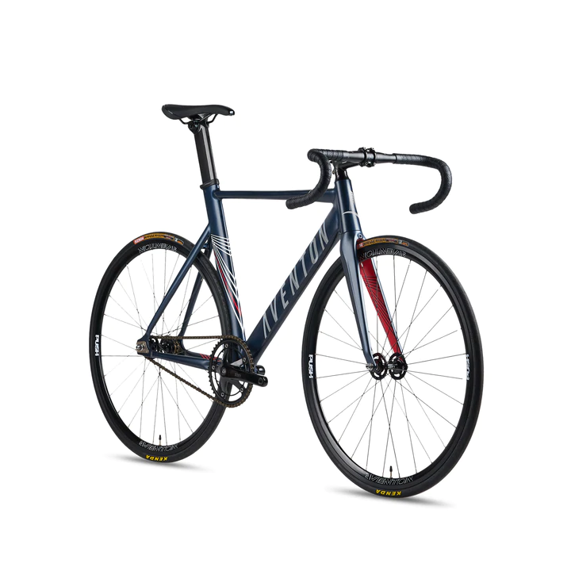
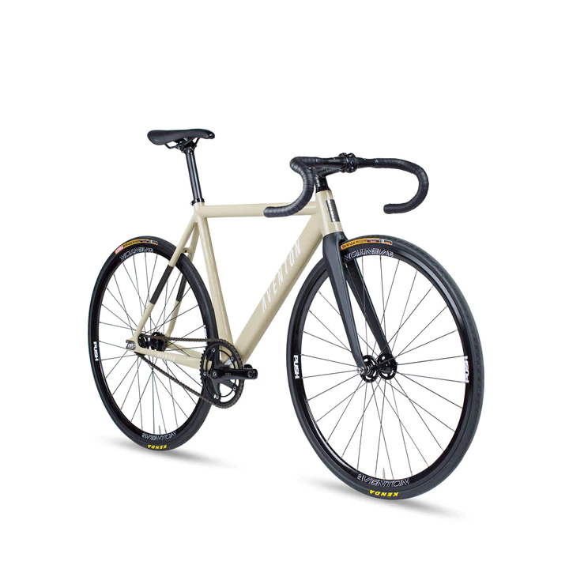
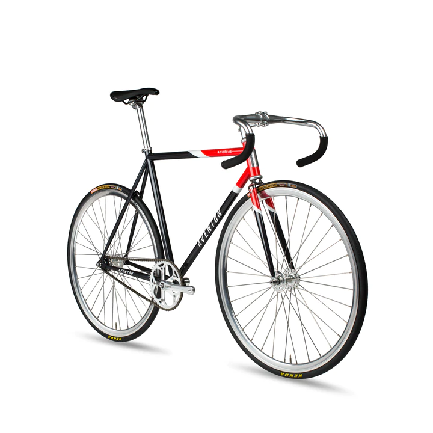
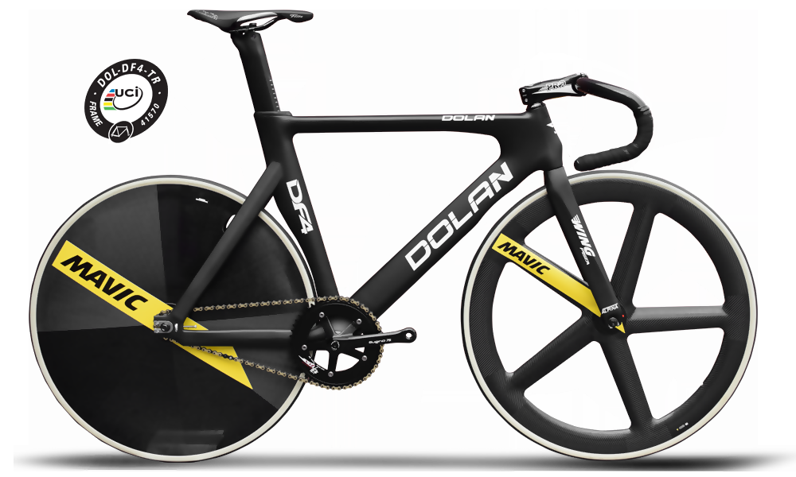
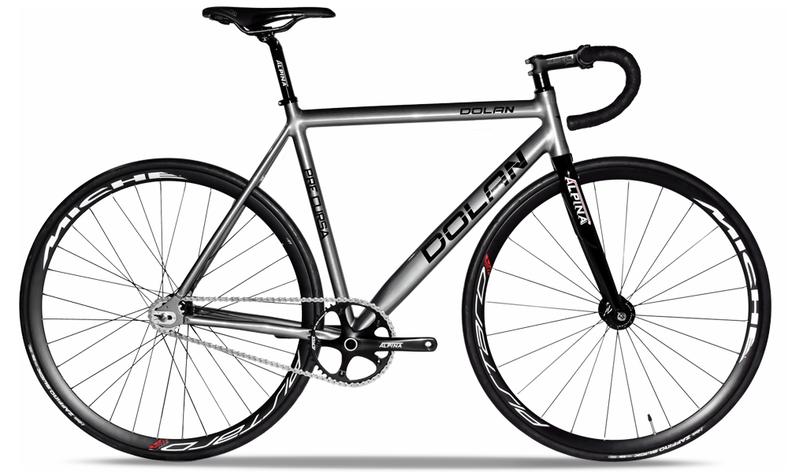
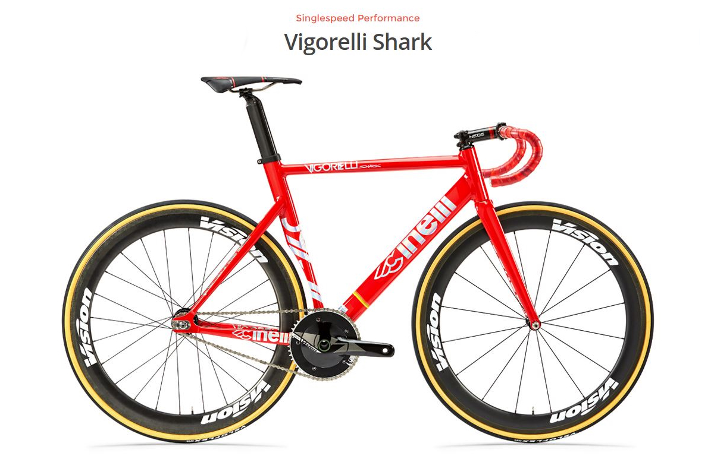
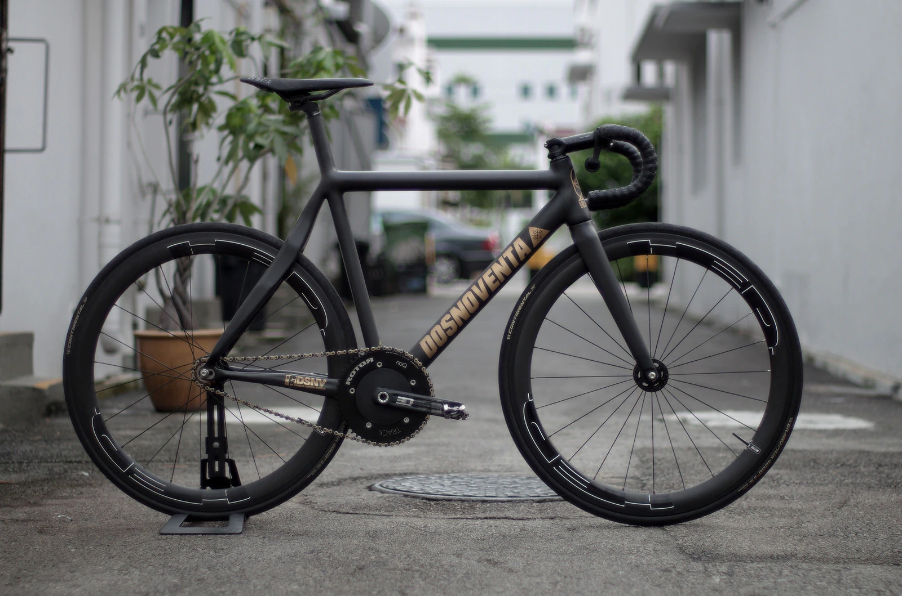
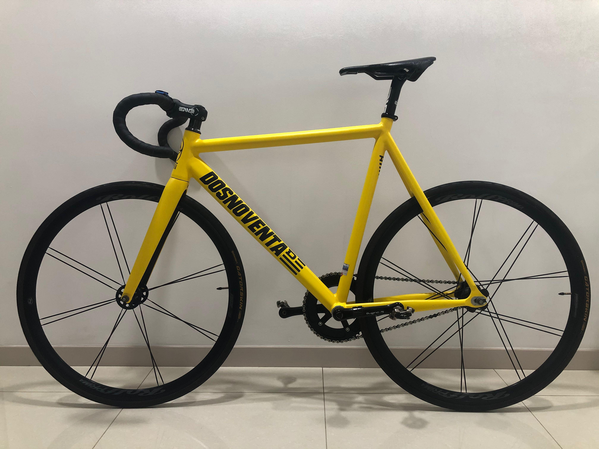
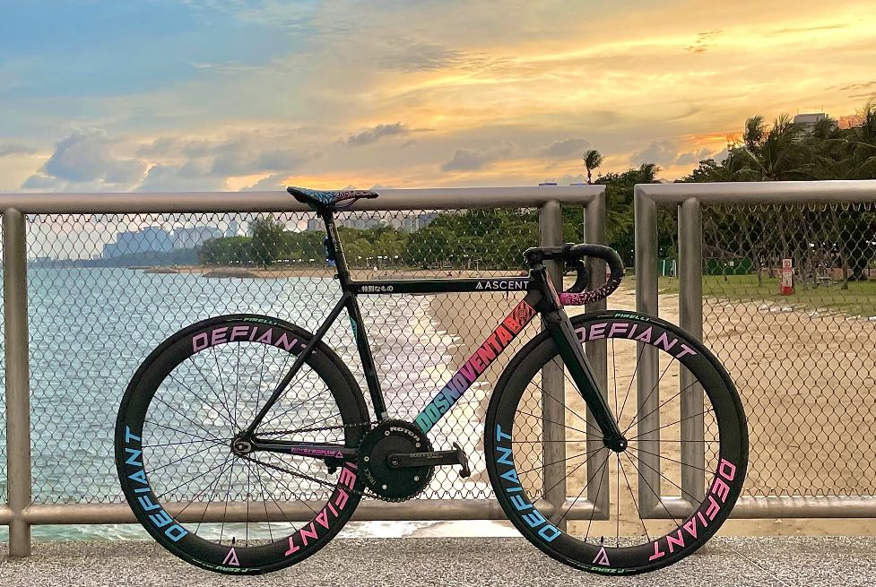
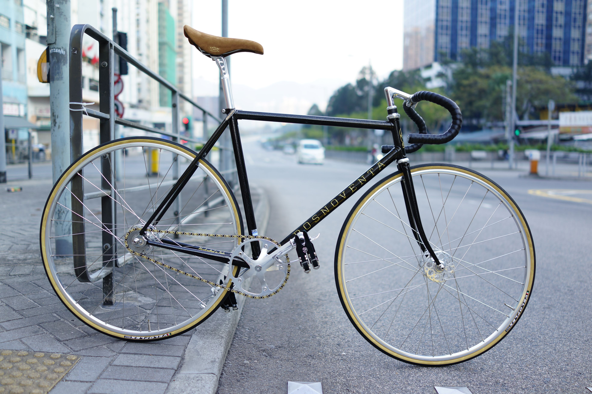

My Top 10 Favorite Bicycles
Aventon Mataro

When you're only satisfied with every advantage in speed and control over the competition.Though proven at the crits and on the streets, we took it to the next level in every aspect. No other imitator can come close with our proprietary frame and seat post design, this is truly our fastest machine we have developed.
Aventon Cordoba

We're conditioned to believe there's only one tool for that one specific job race bike, street bike, whatever bike Born on the streets, the Cordoba didn't get the memo and doesn't plan on following it. With its clean design gracing its dynamic geometry, this do-it-all rig holds the tightest lines at the crits and has the freshest of lines in style. It lets you take the lead in any direction you chose.
Aventon Andreas

The Andreas gets down on Reynolds 520 Chromoly tubing and is real slick, ya dig? But oh, daddy-o, we ain't talkin' no static when we slapped on Sugino cranks to make the Andreas all too real. And don't go trippin' man, the Andreas is Limited edition! Each frame is numbered out of 200, so it's totally hot. Let me get you the skinny on this far out dream machine with the features down below.
Dolan DF4

The Dolan DF4 builds upon the success of its predecessor, the game-changer that was the DF3. Having shattered world records and been the winner of over 80 World and European Championship races we’ve returned to the drawing board to dream it all up again.The DF4 has the same geometry as the DF3 but has been engineered for improved performance and handling. 115g lighter and 18% stiffer, we targetted those all-important areas in track cycling where the differences are really made.
Dolan Pre Cursa

The popularity of the Dolan Pre Cursa speaks masses. Used as the hire bike of choice in velodromes all around the world, the triple butted 7005 Alloy tubed Dolan Pre Cursa is built to keep turning left for many years. Smooth welds on Dolan's most purchased bike, combined with an oversized downtube ensure premium levels of performance whilst being in the budget of the many. Ridden by the complete novice giving track cycling a go for the first time, to being the frame of choice by the many in internationally ranking events expresses volumes for the alloy frame, carbon fork frameset.
Cinelli Vigorelli Shark

Vigorelli Legacy takes you back to where everything started, the Velodrome, without compromises. The most used fixed gear frame flexes its muscles with an upper-aggressive track geometry, sharp as a Laser. 1'1/8'' head tube track designed, short rear triangle, super-stiff rear stays. In the Red Alert colorway with holographic detailing, the Vigorelli Shark is ready to devour every wood you want to speed it on.
Dosnoventa Tokyo

The Dosnoventa Tokyo is the bike chosen by the most demanding riders from around the world. a perfect balance between elegance and technology, lightness and reactivity and maneuverability and robustness. these are some of the attributes that make the Tokyo Dosnoventa's flagship frame.
Dosnoventa Detroit

The most aggressive shape of all Dosnoventa frames. Thanks to its pursuit geometry, it will take you to the next level. competitive, fast, light, stiff, reactive and very unique. Since 2012, the Detroit bike has been the choice of many pro riders around the world.
Dosnoventa Los Angeles

Designed to be a multipurpose bike, with a shape suitable for all kinds of uses, from your daily commute to the city to meeting all the most demanding rider's needs regarding competitions and training. Lightweight, stiff, high class and comfort. The Los Angeles is Dosnoventa's top-seller.
Dosnoventa Barcelona

Made of steel, with a one-inch headset and a perfect geometry to take you anywhere, the Dosnoventa Barcelona is ready to make you enjoy every kilometer you spend on top of it. A bike that due to its geometry, lines, shapes, durability and stiffness, will undoubtedly become a basic part of your everyday life.